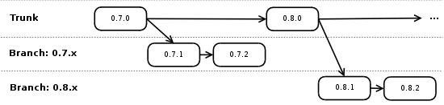

| Subversion Repository Layout |
|
FreeCol no longer develops through our SVN repository. This information is maintained through our Git Repository. This information is retained for historical reference.
At the top-most level of the repository we have the following directories:
Each of these directories have their own trunk, tags and branches directories. The trunk contains the main version, while the tags depicts how a version appears at a release and branches contains alternate directions of development. Currently the tags and branches directories are only used for the freecol part of the repository. Development branchesWe are developing two versions of FreeCol at the same time: the main version and a stable branch.  We use the stable branch only for bugfix releases while new features are placed in the main version. When fixing bugs we add the changes both to the stable branch and the main version. |
|||||||||||||
| < Prev | Next > |
|---|